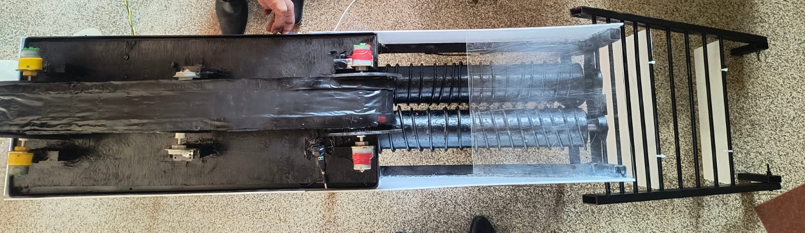
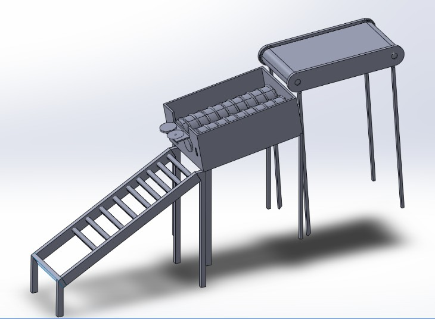
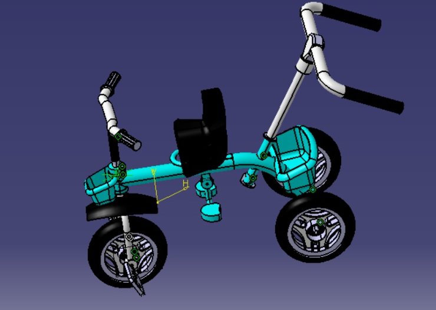
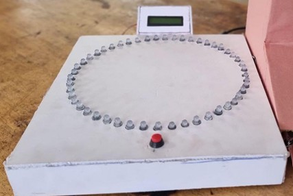

Projects
1. Vegetable Cart Structural Optimization
Performed static & modal analysis in ANSYS. Achieved 17% weight reduction using topology optimization for structural efficiency improvement.
View Conference Paper

2. Onion Detopper Machine
Designed a semi-automatic agricultural machine to enhance post-harvest efficiency and labor safety. Integrated rotary cutting mechanism, structural frame, and safety guard system.
View Report

3. Tricycle Reverse Engineering
Conducted dimensional study, CAD reconstruction in CATIA, and structural evaluation for design validation.

4. Arduino Cyclone Accelade
Developed embedded automation system integrating sensors, microcontroller logic, and mechanical actuation.

5. RFID-Based Sorting Automation
Designed automated mechanical sorting system for logistics applications. Presented research at RAMM Conference.
View Research Paper